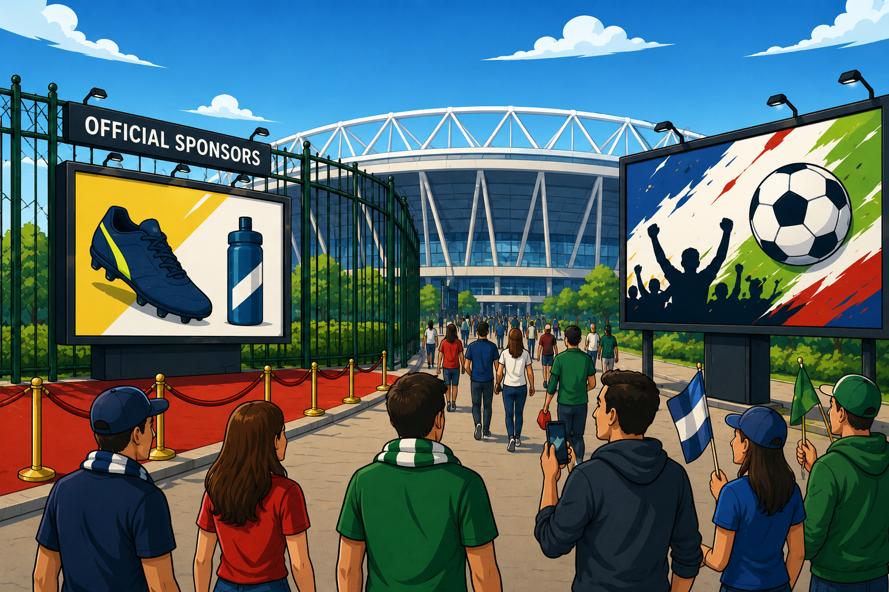

Ambush Marketing and the 2026 World Cup: What Non-Sponsors Can (and Can't) Do
Brands that can't afford an official FIFA sponsorship are already looking for creative ways to ride the wave of consumer attention. Some of those strategies are perfectly legal. Others will generate cease-and-desist letters well before kickoff.

The FIFA World Cup is coming to North America this June, and with it comes one of the largest marketing stages on the planet. The final of the 2022 tournament in Qatar drew over 1.5 billion viewers. For the 2026 edition, 48 teams will play 104 matches across 16 venues in the United States, Mexico, and Canada. Brands that can't afford an official FIFA sponsorship — which can run into hundreds of millions of dollars — are already looking for creative ways to ride the wave of consumer attention without crossing the line into trademark infringement. Some of those strategies are perfectly legal, but others will generate cease-and-desist letters well before kickoff.
This article walks through the legal framework that governs World Cup–related marketing by non-sponsors, with an eye toward what U.S. trademark law actually allows.
What Is Ambush Marketing?
Ambush marketing is a strategy in which a brand that has not paid for official sponsorship rights attempts to create, in the minds of consumers, an association between itself and a major event. It comes in two broad forms. "Direct" ambush marketing involves the unauthorized use of an event's trademarks, logos, or other intellectual property in advertising. "Indirect" or "associative" ambush marketing is subtler: it uses timing, imagery, or contextual cues to create the impression of an affiliation with the event without ever reproducing a protected mark.
FIFA treats both categories as threats to its commercial program and actively polices them. As Lynn Carrillo, FIFA's Director of Commercial Legal, recently told the International Trademark Association, she considers ambush marketing "one of the biggest existential threats to the sporting business," particularly because online and social media campaigns "can associate themselves with events and go viral more quickly than we can manage."
What makes the 2026 tournament uniquely complicated from an enforcement standpoint is that it spans three countries with three distinct intellectual property regimes. A campaign that is lawful in the United States might violate recently amended Mexican industrial property law. Alternatively, a promotional strategy that would be permissible in Canada might draw enforcement action from FIFA in a U.S. jurisdiction. For marketing and legal teams at non-sponsor brands, this structure means that a single cross-border campaign could expose the company to liability in multiple jurisdictions simultaneously.
FIFA's Intellectual Property Arsenal
FIFA maintains a broad portfolio of registered trademarks across all three host countries. According to its published Intellectual Property Guidelines for the tournament, the list of protected word marks includes "FIFA World Cup 26," "FIFA World Cup," "World Cup 26," "World Cup," "FIFA," "Copa Mundial," "Coupe du Monde," and "Mundial," among others. FIFA has also registered host city–specific slogans (such as variations of "We Are 26" tied to individual cities), the official tournament emblem, the official mascot, the trophy image, and even a custom typeface created specifically for the tournament. The trademark portfolio reportedly covers more than 98 registrations in the United States alone, spanning dozens of classes of goods and services.
FIFA's enforcement approach rests on a three-pillar strategy. The first is awareness: FIFA publishes its IP Guidelines well in advance of each tournament to put businesses on notice that its marks are protected and that unauthorized commercial association will draw a legal response. The second is marketplace monitoring, including surveillance of social media, e-commerce platforms, and physical advertising near host venues. The third is legal action, which FIFA has historically pursued through trademark infringement claims, unfair competition claims under Section 43(a) of the Lanham Act (15 U.S.C. § 1125(a)), and domain name disputes under the Uniform Domain-Name Dispute-Resolution Policy.
FIFA's enforcement record at prior tournaments gives a sense of how far the organization is willing to go. At the 2010 World Cup in South Africa, a group of women were ejected from a stadium and two were arrested after wearing orange dresses associated with the Dutch beer brand Bavaria — despite displaying no visible logos. The incident was treated as a covert promotional campaign undermining FIFA's official beer sponsor, Budweiser, and FIFA pursued both criminal complaints (under South Africa's Merchandise Marks Act) and civil proceedings against Bavaria. The same brewery had pulled a similar stunt at the 2006 World Cup in Germany, where Dutch fans wearing orange lederhosen were denied entry to a match. FIFA also routinely strips stadium naming rights from non-sponsor brands during tournament broadcasts. So a match played at Lumen Field in Seattle, for example, may be broadcast simply as "Seattle Stadium," unless the naming-rights holder has a separate FIFA sponsorship arrangement.
Three Different Countries, Three Different Legal Frameworks
None of the three 2026 host countries have enacted event-specific anti-ambush marketing legislation of the type that South Africa, Brazil, and Qatar adopted for their respective tournaments. That means enforcement in all three jurisdictions relies primarily on existing intellectual property and competition laws, the details of which can differ meaningfully.
United States: There is no federal anti-ambush marketing statute in the United States. Rather, FIFA's primary enforcement tools are federal trademark infringement under Section 32 of the Lanham Act (15 U.S.C. § 1114) and false designation of origin or false endorsement under Section 43(a) (15 U.S.C. § 1125(a)). Section 43(a) is particularly important because it prohibits conduct that is "likely to cause confusion, or to cause mistake, or to deceive as to the affiliation, connection, or association" between the advertiser and the event, even in the absence of direct trademark reproduction. FIFA does not need to show that a non-sponsor used the exact phrase "World Cup." If the overall impression of an advertisement suggests an official connection, that may be enough to support a claim.
Mexico: Mexico has taken a more aggressive legislative approach. Recent amendments to the Federal Law for the Protection of Industrial Property (FLPIP) expressly classify ambush marketing as an administrative infringement. Under the amended law, any commercial conduct that induces the public to believe, without authorization, that a brand maintains an official sponsorship relationship with a mass-attendance event is actionable. According to one estimate, administrative fines for violations can reportedly reach approximately $1.6 million USD. In addition, the Mexican Institute of Industrial Property (IMPI) has indicated it is developing enforcement perimeters of up to three kilometers around World Cup stadiums and official fan zones, within which unauthorized commercial activity will face heightened scrutiny.
Canada: Canada has not adopted event-specific legislation for the 2026 tournament. Protection there relies on existing trademark law (including claims for infringement, passing off, and depreciation of goodwill), the Competition Act's prohibitions on false or misleading representations, and border enforcement through the Canada Border Services Agency. Canada's constitutional protection of freedom of expression also shapes the enforcement landscape, as Canadian courts have generally been reluctant to restrict lawful commercial expression that does not involve the use of protected trademarks or a false claim of affiliation.
Where the Lines Are: Nominative Fair Use and Permissible Non-Sponsor Advertising
To be sure, trademark law does not give FIFA a monopoly over all references to the World Cup. The doctrine of nominative fair use, recognized in most U.S. circuits, permits the use of another party's trademark when it is necessary to identify the trademark owner's product or service and the use does not suggest sponsorship or endorsement. Under the test articulated in New Kids on the Block v. News America Publishing, Inc., 971 F.2d 302 (9th Cir. 1992), nominative fair use is generally permissible if three conditions are met: (1) the product or service cannot be readily identified without using the mark, (2) only as much of the mark as is reasonably necessary is used, and (3) the use does not suggest sponsorship or endorsement by the trademark owner.
Applied to the World Cup context, this means a restaurant can post on its website that it will be open early "on days when World Cup matches are played." A newsletter can reference "upcoming World Cup matches" in an editorial preview. A sports bar can note that it will be showing "live soccer" during the tournament. These are descriptive, referential uses that do not imply any official connection to FIFA.
However, the legal risk increases significantly when the event name moves from neutral description into branding. A promotion titled "WORLD CUP SALE!" or "World Cup Watch Party" that features the event name as a prominent element of the campaign — particularly when combined with the advertiser's logo, football imagery, and tournament timing — starts to look more like an attempt to create an association with the event rather than merely refer to it. And if the advertisement incorporates any FIFA-registered mark, logo, emblem, or host city slogan, a defense becomes substantially harder to sustain.
News reporting and editorial commentary enjoy particularly strong protection under the First Amendment. A media outlet's use of the phrase "World Cup" in news coverage, analysis, or opinion is not trademark infringement, and FIFA's own IP Guidelines acknowledge that the organization "welcomes" editorial use of its marks provided such use does not create an unauthorized commercial association. The key boundary is between editorial speech and commercial advertising. A blog post discussing the tournament is editorial, but a blog post designed primarily to drive traffic to a product listing, wrapped in World Cup branding, is commercial, and will be treated accordingly.
Section 43(a) of the Lanham Act adds a separate layer of risk for non-sponsors who use player likenesses in World Cup–themed advertising. A false endorsement claim under Section 43(a) arises when a person's identity is used in a way that creates consumer confusion about whether the person endorses the product. An advertisement featuring an illustration of a recognizable player alongside World Cup–themed promotional material — even one that reproduces no FIFA trademark and uses no actual photograph — could expose the advertiser to claims from both the player (asserting personal right of publicity and Lanham Act rights) and FIFA (asserting its own trademark and anti-ambush-marketing rights). As a recent analysis from Loeb & Loeb noted, a single unauthorized advertisement in this space can quickly cascade into multi-front litigation.
A Practical Compliance Checklist for Non-Sponsor Brands
For marketing and legal teams at companies that are not official FIFA sponsors but want to engage with the enthusiasm surrounding the World Cup, the following considerations can help reduce risk:
Avoid FIFA's registered marks in advertising. Do not use "FIFA," "World Cup," "World Cup 26," "Copa Mundial," "We Are 26," or any of FIFA's registered word marks, logos, or emblems in promotional or commercial materials. A list of protected marks, which FIFA notes is non-exhaustive, is available in the published IP Guidelines. By contrast, generic soccer or football references and country-related imagery that do not incorporate FIFA's intellectual property are generally permissible.
Do not imply sponsorship, endorsement, or affiliation. Phrases like "Official," "Sponsored by," "Presented by," or "In partnership with" in connection with the tournament will invite enforcement action. Subtler implied associations — such as using tournament-specific imagery, timing, and context together in a way that suggests a commercial relationship — can also support a false designation of origin claim under Section 43(a).
Be cautious with player likenesses. Using a recognizable athlete's image, likeness, or identity in advertising without authorization can trigger both state right of publicity claims and federal false endorsement claims under the Lanham Act. During the World Cup window, players are also subject to FIFA participation agreements that restrict their ability to endorse products, which further complicates the licensing landscape.
Treat social media content as advertising. FIFA's enforcement teams monitor social media closely, and organic-looking posts that use FIFA marks, tournament hashtags (such as "#WorldCup2026" or "#WeAre26"), or event imagery for commercial purposes are subject to the same legal standards as traditional advertising. In Mexico, PROFECO's Influencer Advertising Guide requires that influencer partnerships with commercial intent be clearly disclosed, regardless of the form of compensation.
Assess cross-border risk. A campaign running in more than one host country must comply with the laws of each jurisdiction. Mexico's new anti-ambush marketing provisions create enforceable liability for conduct that may not be independently actionable under U.S. or Canadian law. Build in legal review for each market before launching.
Keep editorial and commercial content separate. If your brand publishes content that references the World Cup (e.g., blog posts, newsletters, social commentary), make sure the editorial content is not designed primarily to function as a vehicle for product promotion. The nominative fair use defense is strongest when the trademark reference is descriptive and incidental, not central to a sales pitch.
The 2026 World Cup is a genuine once-in-a-generation marketing moment, and there is room for non-sponsors to participate in the cultural conversation around the tournament without running afoul of FIFA's IP enforcement apparatus. But to do this successfully, brands must understand where the legal boundaries actually sit, and plan their campaigns accordingly.
This content is for general informational purposes only and does not constitute legal advice. Legal matters are fact-specific, and consultation with qualified counsel is recommended for individual circumstances.